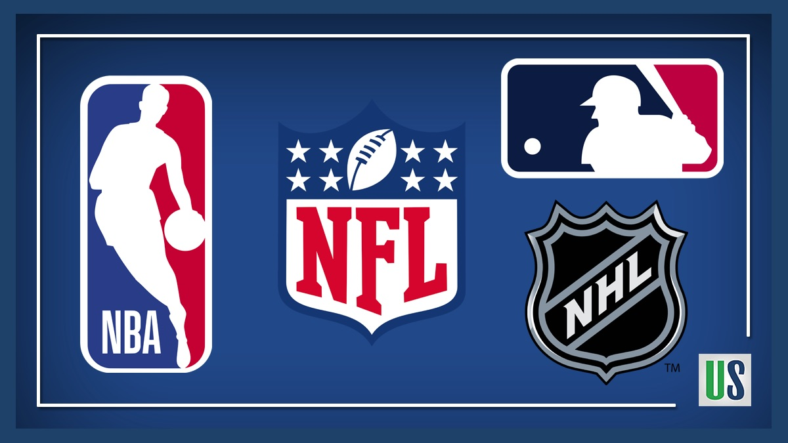

Os esportes são uma das paixões dos norte-americanos, além de fazerem parte da cultura dos Estados
Unidos. Eles estão presentes desde cedo na vida desses cidadãos, começando nas escolas como atividade
extracurricular até na colaboração para muitos jovens entrarem em uma universidade com bolsas de estudo pelo bom
desempenho em alguma modalidade esportiva.Os norte-americanos também jogam e assistem por diversão, claro!
Principalmente grandes finais de competições esportivas como a NFL, de futebol americano ou NBA, de basquete,
são celebradas com muita festa de leste a oeste do país. 
Como já mencionado, os esportes estão intrínsecos à cultura norte-americana por questões que vão muito além
da saúde e bem-estar. Uma das razões é o forte patriotismo existente no país, o que os leva a possuírem grande
espírito competidor.
O esporte é levado muito a sério, está presente desde cedo na vida dos norte-americanos. O primeiro contato
geralmente é na escola, é incentivado desde que são pequenos e intensificado durante o ensino médio (High
School). Em alguns esportes, em reconhecimento ao brilhante desempenho, muitos jovens recebem bolsas de estudos
em universidades como forma de incentivo dada pelas instituições. Muitos podem tornar esse talento uma carreira,
mas são obrigados a levar os estudos a sério, já que um dos requisitos para se manter no time é ter boas notas.
O Futebol Americano é um esporte baseado na força bruta de seus jogadores e nada tem a
ver
com o termo futebol que é utilizado no restante do mundo.O futebol americano ou simplesmente football, como
é conhecido nos Estados Unidos, é um esporte competitivo de equipe, cada qual composta de 11 jogadores em
cada lado. É um jogo que demanda velocidade, agilidade, capacidade tática e força dos jogadores que se
empurram, bloqueiam, perseguem uns aos outros tentando fazer avançar uma bola em território inimigo durante
uma hora de tempo de jogo.
Sobre o futebol americano, O Futebol Americano é um esporte que se baseia na velocidade, na agilidade, na
força bruta e na capacidade tática de seus jogadores. Estes trabalham em equipe empurrando, bloqueando ou
perseguindo os adversários para que a bola possa avançar pelo território até a zona de pontuação. O jogo é
formado por várias jogadas de curta duração que se estendem pelo tempo total da partida.Substituições são
permitidas entre todas as jogadas, fazendo do jogo altamente tático e estratégico.
O basquetebol, ou simplesmente basquete, é um esporte coletivo praticado entre duas equipes. Ele
é jogado com uma bola, onde o objetivo é inseri-la no cesto fixo que está localizado nas extremidades da quadra.
Atualmente, o basquetebol é um dos jogos olímpicos mais populares no mundo. Nas escolas, é um dos esportes mais
praticados nas aulas de educação física.O objetivo do baquete é fazer o maior número de pontos ao inserir a bola
no cesto do time adversário.
Mais Sobre o Basquete;O jogo é disputado por duas equipes de cinco jogadores que tem por objetivo passar a bola
por dentro do cesto disposto nas extremidades do campo. Os cestos ficam a uma altura de três metros e cinco
centímetros. Os jogadores batem a bola contra o chão caminhando dentro do campo, podendo repassá-la a um jogador
da equipe.
O primeiro jogo de Basquete ocorreu em 20 de janeiro de 1892, quando cada equipe, composta por nove jogadores,
era assistida apenas por funcionários da ACM (Associação Cristã de Moços).
Beisebol, basebol ou baseball é uma modalidade esportiva disputada entre duas equipes. Esse nome vem do termo em inglês que é “baseball”, formando por base (“base”) + ball (“bola”). Cada equipe nesse esporte é composta por nove jogadores, que fazem revezamento entre ataque e defesa, ou seja, quem fará as tacadas (com o uso do taco de beisebol) ou tentará pegar a bola quando o jogador do time adversário fizer a tacada. A criação do beisebol é algo sobre o que não se tem plena certeza, mas muitos dão esse título para o combatente Abner Doubleday, dos Estados Unidos, sendo que o ano da criação do esporte teria sido 1839. Mas há os que afirmam que os ingleses teriam criado essa modalidade esportiva.
O hóquei no gelo é uma das modalidades esportivas mais populares em países que estão no hemisfério norte, como o Estados Unidos, Noruega e Canadá. Atualmente, o campeão mundial do esporte é a Finlândia, quando a equipe finlandesa superou a canadense no confronto entre finalistas da última edição da competição. Evidentemente este esporte não é tão popular entre brasileiros, visto que o próprio clina não contribui para que este esporte seja praticada, entretanto, existem muito fãs de hóquei no gelo que moram no Brasil. Essas pessoas tem a tendência de ter um enfoque na liga estadunidense, conhecida como NHL. Esse cenário já é o suficiente para que qualquer pessoa brasileira realize uma aposta que envolva o esporte e é sobre isso que falaremos mais a frente.